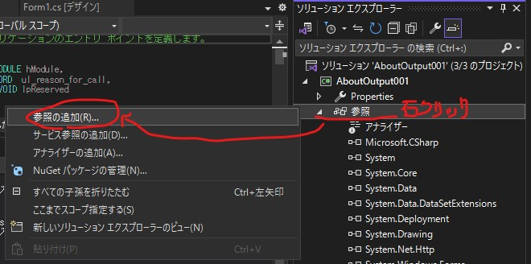
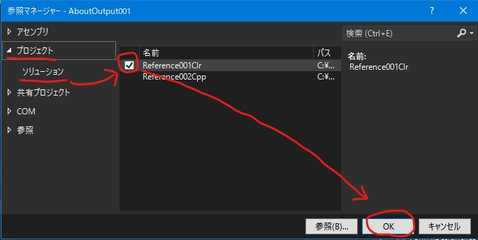

ここまで、「C#からC++を利用する」方法について説明してきました。
しかし、Visual Studio の設定については全くしてきませんでした。
Visual Studioの設定についてはプログラマーや所属するグループによって様々だと思うからです。
しかし、ある方からビルドに関する質問があったのですが、パッと説明できませんでした。。。
私の手順について、復習も兼ねて実際に設定しながら書きたいと思います。
あくまで「私の設定」です。「こんな設定するべきでない！！」という方々もいると思います。参考にだけしてもらえれば、と思います。
説明は以下のようなソリューションを例にして行います。
C#「AboutOutput001」（メインのアプリケーションをイメージ）
参照
C++/CLR「Reference001Clr」（ラッパーをイメージ）
参照
C++「Reference002Cpp」（ライブラリをイメージ）
環境は「Windows10 64bit + Visual Studio 2022」です。
メインのアプリケーションは、「.NET Windows フォーム アプリ」とします。
機能の追加
注意する点は、Visual Studioのインストール直後の環境では「C++/CLR」はビルドできないかもしれない点です。
ビルドできない場合は以下のように機能を追加してください。
もし他に足りない機能があれば、ここで追加しておきましょう。
プロジェクトの新規作成
3つのプロジェクトを新規作成しましょう。
まず、「新しいプロジェクトの作成」でメインのアプリケーション「AboutOutput001」を作成します。
メインは「.NET Windows フォーム アプリ」とします。
次に、ソリューション エクスプローラーの「AboutOutput001」の右クリックから新しいプロジェクトを追加します。名前は「Reference001Clr」。
CLRクラスライブラリを選択します。
.Net Frameworkのバージョンを合わせることを忘れないでください。
最後に、ソリューション エクスプローラーの「AboutOutput001」の右クリックから新しいプロジェクトを追加します。名前は「Reference002Cpp」。
ダイナミック リンク ライブラリを選択します。
全てのプロジェクトが揃いました。
初期状態での出力先の確認
EXEやDLLがどこに出力されるか確認します。
ソリューションのビルドを行ってみましょう。
何のコーディングもしていないので正常にビルドできるはずです。
ソリューションを右クリックし、「エクスプローラーでフォルダを開く」をクリックします。
以下のフォルダにそれぞれ出力されたのではないでしょうか。
しかし、このままでは、DLLがEXEと同じフォルダに追加されないので、うまく動作させることはできません。（最後に手作業でコピーしなくてはなりません）
それも後々に設定します。
ビット数の設定
まず、全てのプロジェクトのビット数を合わせます。
構成マネージャーをクリックします。
下の画像のようになっていると思います。
「AboutOutput001」のx64を新規作成します。
既にx64のプラットフォームがある場合はチェックOFF。
ここのリストです。
全てx64にしてください。
私は[編集]からx64以外を削除します。
プロジェクトを新規作成したり追加したりすると、自動的に構成マネージャーの設定の編集が行われる場合があります。
たまに確認しましょう。
いきなりビルドが失敗してビビります。
プロジェクトの依存関係の設定
ビルドは、以下の順番で実行されなくてはなりません。
（１）C++「Reference002Cpp」（ライブラリをイメージ）
（２）C++/CLR「Reference001Clr」（ラッパーをイメージ）
（３）C#「AboutOutput001」（メインのアプリケーションをイメージ）
これを設定するには以下の手順で行います。
ソリューションを右クリックし、プロジェクトの依存関係をクリックします。
「AboutOutput001」は「Reference001Clr」に依存しています。
「Reference001Clr」は「Reference002Cpp」に依存しています。
設定が終わったら[OK]をクリックして更新し、プロジェクトのビルド順序も確認してみましょう。
うまく設定できたようです。
依存関係の設定後、[OK]をクリックしないと更新されないので注意してください。
実際にビルドしてみましょう。うまくいけば設定した順にビルドされます。
参照設定
他のプロジェクトのDLLを参照するには、依存関係を設定するだけではダメです。
「.NET Windows フォーム アプリ」においては、以下のように設定します。
「AboutOutput001」の参照設定を右クリックし、参照の追加を選択します。

プロジェクト→ソリューション→「Reference001Clr」→OK

ビルドしてみましょう。以下のように「AboutOutput001.exe」の出力されるフォルダに「Reference001Clr.dll」が出力されたのが分かります。
（また、出力先がbin\Debugからbin\x64\Debugに変わっています。）
C++のDLLは、こんな感じで簡単に参照したいDLLをコピーすることはできません。
出力先の設定
C++のDLLをどうするかが悩みどころです。私はC++とC#の出力先を同じにする方法をとります。
C++/CLRはC#のプロジェクトで参照設定が正常に行われていれば、自動的にコピーしてくれます。
そもそもC#の出力先は階層が深く、すぐにアクセスできないので嫌いなのです。
C++の出力先に合わせようと思います。
「AboutOutput001」を右クリックして、プロパティを選択します。
ビルドの出力先を設定します。
「bin\x64\Debug\」を「..\x64\Debug\」、
「bin\x64\Release\」を「..\x64\Release\」に修正します。
ビルドします。
C++の出力先を変更することも可能ですが、C++の設定は何かと分かりにくいので 。。。
Visual Studioで生成されるDLL以外（ライブラリの依存関係にあるDLL）は、そもそもコピーされません。
その際は、C#のビルド後イベント（DOSコマンド）でコピーします。
サンプルプログラム
今回作成したサンプルプログラムは、こちらに置いておきます。